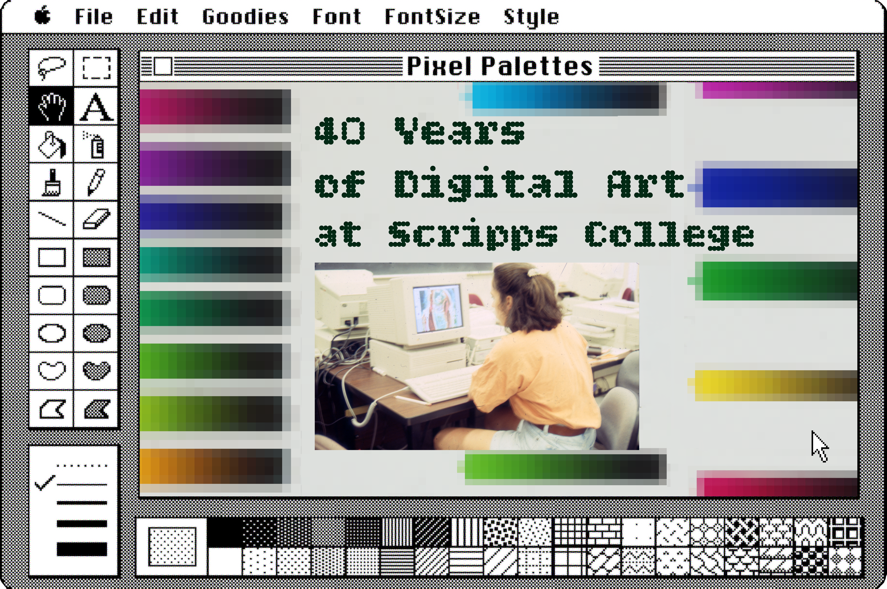

“Pixel Palettes: 40 Years of Digital Art at Scripps College” explores the pioneering role of Scripps College in incorporating computing technology into visual arts education and practice from 1987 to 2027. In our AI-dominated climate, digital art is typically presented as future-oriented, immaterial, and male-dominated. By contrast, this exhibition adopts a historical, materially grounded, and feminist framework. “Pixel Palettes” puts Scripps, a women’s liberal arts college celebrating its centennial this year, on the map as a seedbed of digital art in Southern California. It is co-curated by Professors Nancy Macko (Art) and Zsofi Valyi-Nagy (Art History), with support from the Scripps Centennial Fund. The exhibition is organized around the archive of Macko, who completed a computer graphics certificate program from Otis Art Institute/Parsons School of Design (1987-1989) and founded the Scripps Digital Art Program at Scripps in 1990. Over 100 works of digital art, made by students at Scripps from 1990 to the present, will be shown in a variety of formats, from framed prints to interactive files in their native environment: vintage Macintosh computers. An interactive workstation in the gallery will allow visitors to use the same software Professor Macko first used to teach digital art, PixelPaint Professional and Aldus Freehand, installed on a Macintosh Performa (1993).
Student work will be shown alongside art by Scripps alumni Amy Ellingson ‘86 and Monica Furmanski ‘96, and current Scripps faculty in Art and Media Studies who work with digital media ––Vivian Charlesworth, Ken Gonzales-Day, Aly Ogasian, Vinny Roca, Kim-Trang Tran, and Carlin Wing, as well as Macko and Valyi-Nagy. Students from “Introduction to Digital Art” and “The Art World since 1989” (Fall 2026) are developing interpretive material for the exhibition, including wall texts, alt texts, and interviews with participating faculty and alumni artists, which will be published on the exhibition website, pixel-palettes.net, built by Abi Conrado Sabido (Pomona) in HTML. Pixel Palettes is part of an exciting year of conversations, performances, exhibitions, and ideas as we celebrate the College’s centennial.
On Thursday, October 22, at 11am, Santa Fe based artist Amy Ellingson (Scripps ’86) will give an artist’s talk, “Between the Pixel and the Hand: Systems, Repetition, and the Making of a Painting,” in the Clark Humanities Museum.
The Museum is accessible by elevator. FMI or questions about accessibility, contact: nmacko@scrippscollege.edu and/or zvalyinagy@scrippscollege.edu.